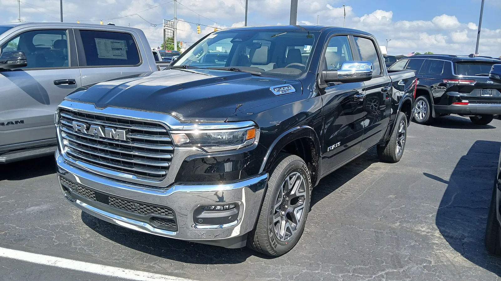
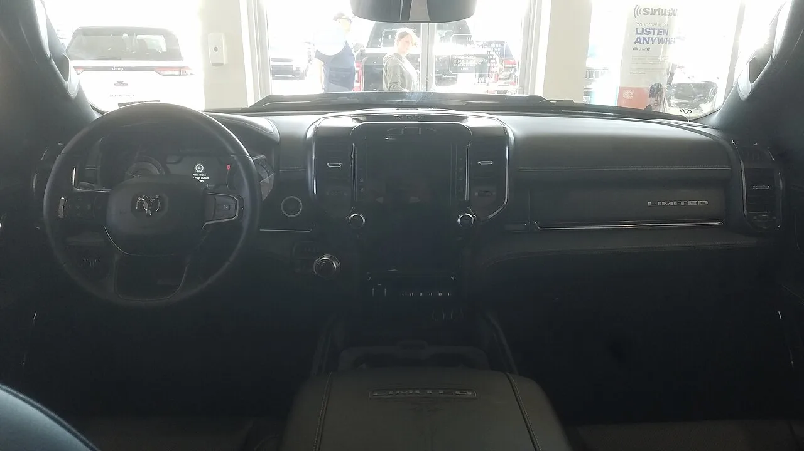
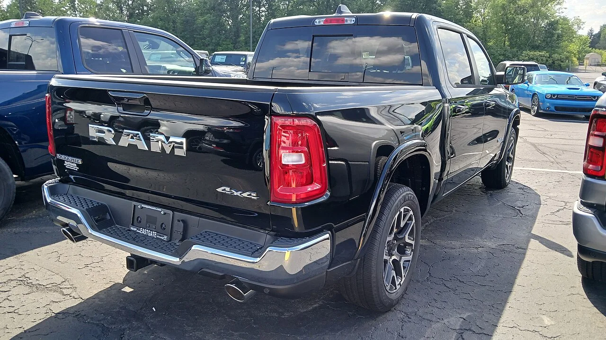
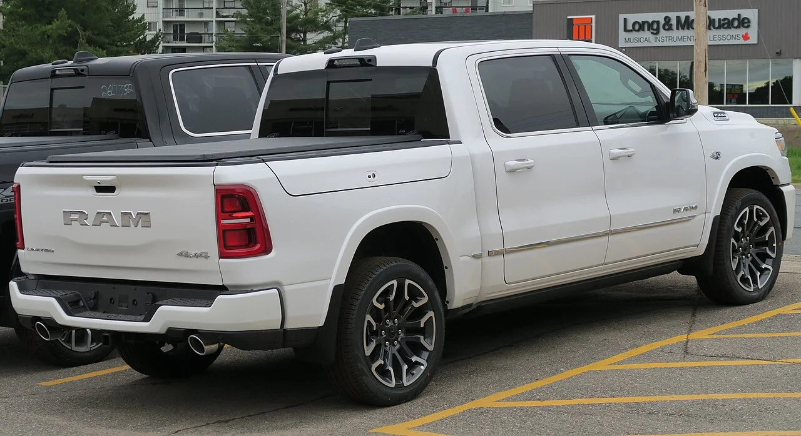
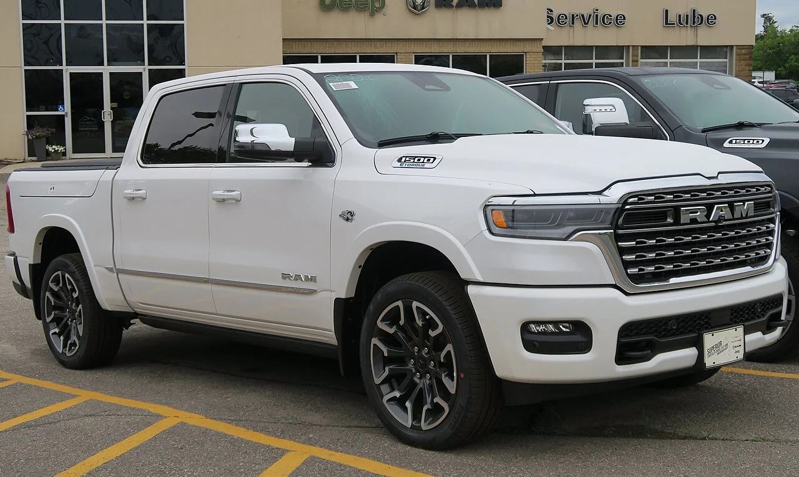
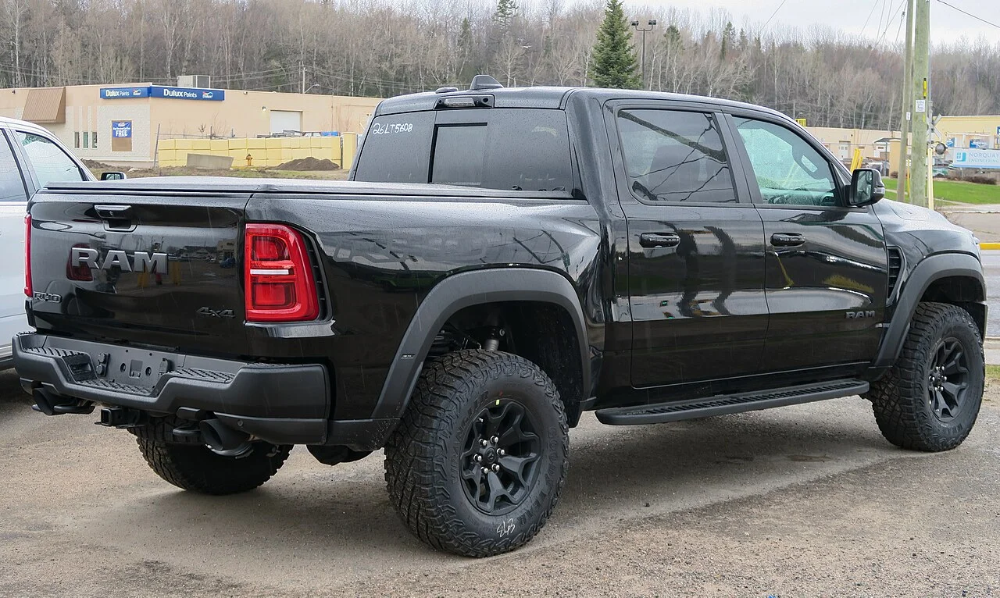

▲ 램 1500 크루캡 4x4(위키미디어 파일 설명 기준 2025년형) ⓒ Elise240SX, Wikimedia Commons (CC BY-SA 4.0)
후진 기어를 넣었는데 센터 화면에 후방 영상이 안 뜬다. 미국 도로교통안전청(NHTSA)에 접수된 램 1500 리콜(캠페인 26V560)이 바로 그런 결함이다. 대상은 2025~2026년형 램 1500 23만 9,130대이고, 원인은 하드웨어가 아니라 라디오 소프트웨어 오류다. 이 건은 8월 27일 기사에서 다룬 램 1500 127만 대 시트벨트 앵커 리콜과 별개다. 이 글은 NHTSA 데이터베이스와 제조사가 NHTSA에 낸 Part 573 보고서, 현지 보도로 발표 시점·대수·시정 방법을 확인했고, 한국 판매분에 해당하는지는 확인된 만큼만 적었다. 같은 증상(후방카메라 영상 미표시)으로 8월 13일 접수된 84만 대 규모의 다른 리콜(26V531)에도 2026년형 램 1500이 들어 있다는 점도 확인했다.
1. NHTSA 기록으로 확인한 리콜 내용
▲ 램 1500 크루캡 4x4(2025년형 오프로더 패키지, 짙은 청색). 위키미디어 파일 설명 기준 사진이며, 이번 리콜의 모든 트림·색상과 일치한다는 뜻은 아니다 ⓒ Elise240SX, Wikimedia Commons (CC BY-SA 4.0)
NHTSA 리콜 데이터에서 이 건의 캠페인 번호는 26V560000, 제조사는 Chrysler(FCA US, LLC), 부품 분류는 "후진 중 사고 방지: 소프트웨어"다. 접수일은 2026년 9월 1일이다(데이터베이스 필드에는 "01/09/2026"으로 일/월/연 순서로 적혀 있고, Part 573 보고서의 제출일 "Sep 01, 2026"과 일치한다). 결함 설명은 "라디오 소프트웨어 오류로 후방카메라 영상이 표시되지 않을 수 있다"이고, 그 결과 연방 자동차 안전기준 111호(후방 시야)를 충족하지 못한다고 적혀 있다. 후방 영상이 나오지 않으면 운전자의 후방 시야가 줄어 충돌 위험이 커진다는 것이 NHTSA의 설명이다.
| 항목 | 내용 | 출처 |
|---|---|---|
| 캠페인 번호 | NHTSA 26V560000 / 제조사 83D | NHTSA 리콜 데이터 |
| 대상 모델 | 2025~2026년형 램 1500 | NHTSA |
| 대수 | 239,130대(NHTSA 리콜 데이터베이스). Part 573 보고서와 폭스 계열 보도는 239,131대 | NHTSA 데이터베이스 / Part 573 |
| 접수일 | 2026년 9월 1일 | NHTSA |
| 생산 기간 | 2023년 10월 6일(첫 2025년형)~2026년 2월 23일(마지막 2026년형). 이후 생산분이나 다른 라디오·카메라 장착 차는 제외 | NHTSA Part 573 |
| 결함 | 라디오 소프트웨어 오류로 후방카메라 영상 미표시 가능. 대상 차량의 100%에 결함 소프트웨어가 있다고 제조사가 추정 | NHTSA / Part 573 |
| 부품 공급사 | 하만 베커 오토모티브 시스템스(미국 미시간주 노비), 부품은 라디오 | Part 573 |
| 제조사 경과 | 3월 17일 조사 개시 → 8월 5일 문제 인지 → 8월 26일 FMVSS 111 미충족 확정 → 9월 1일 NHTSA 제출 | Part 573 |
| 시정 | 라디오 소프트웨어 OTA 또는 딜러 무상 업데이트 | NHTSA |
| 차대번호 조회 | 2026년 9월 9일부터 NHTSA 사이트에서 검색 가능 | NHTSA |
| 소유자 통지 | 딜러 통지 9월 9일, 소유자 우편 9월 24일~10월 2일 단계적 발송(Part 573). 현지 보도(9월 24일 게재)는 "목요일부터 통지 시작" | Part 573 / 폭스 디트로이트 |
23만 9,130대와 23만 9,131대의 한 대 차이는 NHTSA 안에서도 나타난다. 리콜 데이터베이스(조회 API)에는 239,130대, 제조사가 제출한 Part 573 보고서에는 239,131대로 적혀 있고, 폭스 계열 등 현지 보도는 보고서 숫자를 썼다. 한 대가 달라진 이유는 두 문서 어디에도 설명이 없어 확인하지 못했다. 제목과 본문은 NHTSA 리콜 데이터베이스의 23만 9,130대를 기준으로 쓴다. 피해 사례(실제 충돌·부상 보고)가 있는지는 확인한 자료에 나오지 않아 알 수 없다.
NHTSA 리콜 조회 바로가기2. 이건 9월 1일 접수 건이다 — 날짜를 잘못 읽기 쉬운 이유

▲ 크롬 그릴을 얹은 램 1500 라라미 크루캡(위키미디어 파일 설명 기준 2025년형). 이번 리콜 대상 연식에 속하지만 사진 속 개별 차량의 대상 여부는 알 수 없다 ⓒ Deathpallie325, Wikimedia Commons (CC BY-SA 4.0)
NHTSA의 접수일은 9월 1일이다. 차대번호 조회는 9월 9일 열렸고, 소유자 통지는 9월 24일에 시작됐으며, 폭스 계열 현지 보도는 9월 24일에 처음 게재됐다(25일 수정). 그래서 이 건은 "10월에 새로 터진 리콜"이 아니라 "9월 초 접수, 9월 말 통지와 보도가 이어진 리콜"로 읽어야 한다. 제조사 쪽 기록으로는 3월에 조사를 시작해 반년 가까이 지난 뒤 접수한 건이기도 하다. 접수 시점이 보도 시점보다 3주 앞서는 만큼, 기사 날짜만으로 리콜 시점을 판단하면 안 된다.
| 날짜(2026년) | 일어난 일 |
|---|---|
| 3월 17일 | 제조사(FCA US) 안전·규제 조직이 후방카메라 미표시 건 조사 개시 |
| 8월 5일 / 8월 26일 | 문제 인지 / 규제위원회가 FMVSS 111 미충족 확정 |
| 9월 1일 | NHTSA에 리콜 접수(Part 573 제출) |
| 9월 9일 | NHTSA 사이트에서 차대번호 조회 가능 |
| 9월 24일 | 소유자 통지 우편 발송 시작 예정일(NHTSA). 같은 날 폭스 디트로이트 보도 게재("목요일부터 통지 시작") |
| 9월 25일 | 폭스 디트로이트 기사 수정(최초 게재는 24일) |
| 10월 2일 | 소유자 통지 단계적 발송 예정 종료일(Part 573, "Phased Recall") |
3. 127만 대 시트벨트 리콜과는 무엇이 다른가
램 1500에는 7월 30일부터 9월 1일 사이 서로 다른 후속 리콜이 NHTSA에 접수됐다. 시트벨트 앵커 건(26V495, 7월 30일 접수), 후방카메라 건(26V531, 8월 13일)과 이번 건(26V560, 9월 1일)이다. 이 가운데 시트벨트 건과 이번 건을 비교한다. 시트벨트 건은 2열 시트벨트 버클 앵커가 차체에 제대로 체결되지 않았을 가능성(대수 1,271,294대, 2019~2026년형)이고, 이번 건은 후방카메라 표시 소프트웨어 오류다. 시트벨트 건의 생산 기간(2018년 2월 17일~2026년 4월 27일)이 이번 건의 생산 기간(2023년 10월 6일~2026년 2월 23일)을 포함하고 있어, 한 대가 두 건에 모두 해당하는 경우가 적지 않을 것으로 추정된다. 다만 시트벨트 건의 대상이 모든 램 1500인지는 확인하지 못했고, 겹치는 차량의 규모도 공개된 자료에 없으므로 두 대수를 더해 "총 150만 대"처럼 쓰면 안 된다.
| 구분 | 시트벨트 앵커 리콜(26V495) | 이번 후방카메라 리콜 |
|---|---|---|
| NHTSA 접수일 | 2026년 7월 30일 | 2026년 9월 1일 |
| 대수 | 1,271,294대 | 239,130대(보고서 239,131대) |
| 대상 연식 | 2019~2026년형 | 2025~2026년형 |
| 원인 | 2열 버클 앵커 체결 불량 가능성 | 라디오 소프트웨어 오류 |
| 시정 | 딜러 점검·체결 | 소프트웨어 OTA 또는 딜러 업데이트 |
| 위반 기준 | 연방 안전기준 미충족 | FMVSS 111(후방 시야) |
시트벨트 건의 상세 내용은 앞선 기사에서 다뤘다. 두 리콜은 NHTSA에서 캠페인 번호가 서로 다르다.
4. 무엇이 위험한가 — 소프트웨어 결함이 안전기준과 만나는 지점

▲ 램 1500 실내(2022년형 리미티드 크루캡 대시보드). 후방카메라 영상은 이런 센터 디스플레이에 표시되지만, 이 사진은 이번 리콜 대상 연식(2025~2026년형)이 아니다 ⓒ Deathpallie325, Wikimedia Commons (CC BY-SA 4.0)

▲ 램 1500 라라미 크루캡의 후면(2025년형). 후방카메라는 테일게이트 쪽 렌즈로 촬영한 영상을 센터 화면에 띄운다 ⓒ Deathpallie325, Wikimedia Commons (CC BY-SA 4.0)
후방카메라는 소프트웨어를 통해 센터 화면에 영상을 띄운다. 이번 리콜은 라디오(헤드유닛) 소프트웨어 오류로 이 영상이 안 나올 수 있다는 것이다. 카메라 렌즈나 배선 같은 부품 결함이라는 설명은 NHTSA 자료에 없다. NHTSA는 이 결함을 "후진 중 사고 방지" 분류에 넣었고, 후방 시야 기준(FMVSS 111) 위반으로 판단했다. 제조사 보고서가 인용한 조항(S6.2.6)은 후진을 시작할 때마다 후방 영상이 기본으로 화면에 보여야 하고 시야각·화면 크기 요건도 충족해야 한다는 내용이다. 운전자는 사이드미러와 직접 눈으로 후방을 확인해야 한다는 점은 달라지지 않지만, 카메라에 익숙해진 운전자일수록 영상이 비었을 때 후방 확인이 늦어질 수 있다. 이 부분은 일반적 위험 설명이고, 이 결함으로 실제 사고가 났다는 보고는 확인하지 못했다.
핵심 포인트
- 부품 교체가 아니라 소프트웨어 수정이다. 무상이며 OTA 또는 딜러에서 진행한다.
- 시정 설명은 "OTA 또는 딜러"이고 Part 573의 시정 유형도 "Software, Software OTA"다. 다만 NHTSA 데이터의 OTA 표시(overTheAirUpdate)는 false여서, 모든 대상 차량이 OTA로 해결되는지는 확인하지 못했다.
- 시정 전까지 차를 세워 둬야 한다는 지시(주차 금지·야외 주차)는 NHTSA 기록에 없다. 데이터의 parkIt, parkOutSide 항목은 모두 false였다.
- 영상이 나오지 않는 증상이 이미 있었다면 딜러에 리콜 번호(83D)를 말하고 점검을 요청한다. 시정 전에는 사이드미러와 직접 눈으로 후방을 확인하는 습관이 우선이다.
5. 시정 방법 — OTA 또는 딜러, 비용은 무상
스텔란티스는 라디오 소프트웨어를 OTA(무선) 또는 딜러에서 무상으로 업데이트한다. 소유자 통지는 9월 24일 우편 발송이 예정됐고, 차대번호는 9월 9일부터 NHTSA 사이트에서 조회할 수 있다. 소유자 문의는 크라이슬러 고객센터(800-853-1403)이고 리콜 번호는 83D다. 램 공식 사이트에서 차대번호를 입력해도 대상 여부를 볼 수 있다고 현지 보도는 전했다. 업데이트 소요 시간이나 OTA가 가능한 차의 비율은 확인하지 못했다.

▲ 2026년형 램 1500 리미티드의 후면(캐나다 촬영 사진). 이번 리콜에는 2025~2026년형 램 1500이 포함되며, 사진 속 개별 차량의 대상 여부는 알 수 없다 ⓒ Elise240SX, Wikimedia Commons (CC BY-SA 4.0)
| 확인할 것 | 방법 |
|---|---|
| 내 차량이 대상인지 | NHTSA 사이트에서 차대번호(VIN) 조회, 또는 램 공식 사이트에서 VIN 입력 |
| 리콜 번호 | NHTSA 26V560 / 제조사 83D |
| 시정 방법 | OTA 또는 딜러 방문, 무상 |
| 문의처 | 크라이슬러 고객센터 800-853-1403(미국) |
| 이미 자비로 고쳤다면 | 제조사는 "일반 환급 계획"(general reimbursement plan)을 따른다고 Part 573에 적었다. 구체 절차는 확인하지 못했다. |
6. 한국 운전자는 무엇을 보면 되나

▲ 램 1500 RHO(전시장 촬영). 국내에는 리미티드와 RHO 두 트림이 소개됐다 ⓒ Kevauto, Wikimedia Commons (CC BY-SA 4.0)
국내에서는 차봇모터스가 램 1500을 수입·판매한다. 위키트리·뉴스와 보도(2026년 2월 25일)에 따르면 차봇모터스는 2025년 12월 22일 미국 램 인터내셔널과 어프루브드 리테일러 계약을 맺었다. 스텔란티스코리아는 처음에 차봇모터스를 미국 본사에 소개하는 가교 역할만 했고, 수입·판매·보증·정비·부품 공급은 차봇모터스가 독자적으로 진행한다고 위키트리는 전했다. 즉 램 1500의 국내 책임 주체는 스텔란티스코리아가 아니라 차봇모터스다. 트림은 리미티드(1억 4,900만 원)와 RHO(1억 5,400만 원) 두 가지이며 2026년 4월 인도를 목표로 했고(뉴스와, 3월 23일), 7월 27일에는 판교에 서울 전시장이 문을 열었다(스타뉴스, 7월 28일). 이 가격은 부가세 포함 값이다. 이번 NHTSA 리콜은 미국 시장 2025~2026년형 램 1500을 대상으로 하며, 국내 판매 램 1500이 같은 라디오 소프트웨어를 쓰는지, 포함됐는지는 확인하지 못했다. 국토교통부 리콜 공표나 차봇모터스 공지에서 이번 건을 다룬 자료도 검색으로는 찾지 못했다(자동차리콜센터 사이트를 직접 조회한 것은 아니다). 참고로 이번 건의 생산 기간은 2026년 2월 23일까지이고 국내 인도 목표는 4월이라, 국내 인도분이 이 기간 안에 만들어진 차라면 이론상 겹칠 수 있다. 그러나 국내 인도 차량의 연식·생산 시기·라디오 사양은 공개된 자료가 없어 추정일 뿐이다. 국내 판매분이 대상이라면 수입사가 국토교통부에 시정 계획을 신고하고 자동차리콜센터에 공표하는 것이 원칙이다.

▲ 2026년형 램 1500 리미티드(캐나다 촬영 사진). 국내에는 리미티드와 RHO가 소개됐지만, 국내 인도 차량의 사양은 이 사진과 다를 수 있다 ⓒ Elise240SX, Wikimedia Commons (CC BY-SA 4.0)
| 항목 | 확인 결과 |
|---|---|
| 국내 판매사 | 차봇모터스(램 인터내셔널과 어프루브드 리테일러 계약. 스텔란티스코리아는 소개 역할, 판매·보증·정비는 차봇모터스 독자 운영) |
| 국내 트림·가격 | 리미티드 1억 4,900만 원, RHO 1억 5,400만 원(부가세 포함) |
| 국내 차량의 연식·생산 시기 | 확인하지 못했다 |
| 국내 리콜 공표 여부 | 확인하지 못했다 |
| 해당 소프트웨어 탑재 여부 | 확인하지 못했다 |
| 8월 카메라 리콜(26V531) 해당 여부 | 확인하지 못했다 |
국내 램 1500 차주라면 자동차리콜센터(car.go.kr)에서 차대번호로 리콜 여부를 조회하고, 의심되면 판매사 서비스센터에 직접 문의하는 것이 안전하다. 미국 전용 최상위 트림인 텅스텐은 국내 출시 계획이 확인되지 않았다는 점을 텅스텐 감가상각 기사에서 짚었다. 이 글은 국내 차량이 대상이라고 말하는 글이 아니다.
자동차리콜센터 바로가기7. 8월의 84만 대 리콜 — 같은 증상, 같은 부품사, 다른 캠페인

▲ 2026년형 램 1500 RHO의 후면(캐나다 촬영 사진). 2026년형 램 1500은 8월 리콜(26V531)에도, 이번 리콜에도 포함될 수 있는 연식이다 ⓒ Elise240SX, Wikimedia Commons (CC BY-SA 4.0)
이번 건과 증상이 같은 리콜이 한 달 전에 이미 있었다. NHTSA 캠페인 26V531(제조사 번호 78D)은 8월 13일 접수됐고 대수는 844,027대다. 지프 랭글러·글래디에이터·그랜드 체로키, 크라이슬러 퍼시피카·보이저, 닷지 차저, 램 1500·2500·프로마스터 등 2026년형(일부 2026~2027년형)이 대상이며, 라디오 소프트웨어 때문에 후진 때 후방카메라 영상이 나오지 않을 수 있다는 내용이다. 부품 공급사도 이번 건과 같은 하만 베커다. 해외 매체 autoevolution이 "라디오 소프트웨어 버그로 트럭·밴·미니밴·SUV·승용차 리콜"로 다룬 기사가 이 건으로 보이며, 다른 매체는 미국 약 85만 대에 미국 외 약 10만 7천 대가 더해진다고 전했다(8월 17일 보도, 그 기사를 직접 확인하지는 못했다).
| 구분 | 8월 카메라 리콜 26V531 | 이번 리콜 26V560 |
|---|---|---|
| NHTSA 접수일 | 2026년 8월 13일(Part 573 제출 8월 25일) | 2026년 9월 1일 |
| 전체 대수 | 844,027대(Part 573 기준 16개 차종·연식 항목) | 239,130대(램 1500 단일) |
| 램 1500 대상 | 2026년형 211,114대(생산 2025년 4월 9일~2026년 7월 21일) | 2025~2026년형 약 239,130대(생산 2023년 10월 6일~2026년 2월 23일) |
| 제조사 번호 | 78D | 83D |
| 부품사 | 하만 베커 | 하만 베커 |
| 기준 | FMVSS 111 | FMVSS 111 |
| 소유자 통지 | 9월 2일부터 우편 발송 | 9월 24일~10월 2일 단계 발송 |
두 건의 관계는 NHTSA 문서에 적혀 있지 않다. 이번 건 Part 573의 "관련 리콜 번호"(Related NHTSA Recall Number) 칸은 비어 있고, 제외 대상을 "생산 시기가 이후이거나 다른 라디오·카메라를 쓴 차"로 설명한다. 이 설명으로 보면 두 건은 서로 다른 라디오·소프트웨어 사양의 차량을 각각 묶은 것으로 읽히지만, 2026년형 램 1500은 두 건 모두에 들어 있어 같은 차가 중복 해당하는지는 확인하지 못했다. 두 건의 대수를 합산하면 안 되는 이유다. 램 1500 2026년형 오너라면 NHTSA 사이트에서 차대번호를 조회해 어느 쪽에 해당하는지 각각 보는 것이 가장 정확하다.
이 점은 국내 뉴스에서도 눈여겨볼 대목이다. 국내에서 10월 6일 기사로 다룬 투싼 FCA 소프트웨어 리콜처럼 부품 결함이 아닌 소프트웨어 문제가 리콜 사유가 되는 사례가 있다. 다만 제조사·차종·원인이 달라 두 사례만으로 "소프트웨어 리콜이 늘고 있다"고 말할 수는 없고, 이 글은 램 1500 관련 사실만 정리했다.
8. 정리 — 램 1500 후방카메라 리콜, 네 가지
체크포인트
- 무엇: 2025~2026년형 램 1500 23만 9,130대(NHTSA 데이터베이스, 제조사 보고서는 239,131대), 라디오 소프트웨어 오류로 후방카메라 영상이 안 나올 수 있다(NHTSA 26V560, 제조사 83D, 부품사 하만 베커).
- 언제: NHTSA 접수 9월 1일, 차대번호 조회 9월 9일, 소유자 우편 통지 9월 24일~10월 2일 단계 발송. 10월 신규 발표가 아니다.
- 시정: 라디오 소프트웨어 OTA 또는 딜러 무상 업데이트. 127만 대 시트벨트 리콜(26V495)과는 별개이고, 같은 증상의 8월 84만 대 카메라 리콜(26V531, 2026년형 램 1500 21만여 대 포함)과도 캠페인이 다르다. 중복 해당 규모는 확인하지 못했다.
- 한국: 국내 판매 램 1500(차봇모터스 수입, 스텔란티스코리아가 아니라 램 인터내셔널과 직접 계약)이 대상인지, 국내 리콜 공표가 있는지는 확인하지 못했다. 자동차리콜센터 차대번호 조회로 직접 확인한다.
NHTSA 데이터와 현지 보도에 따른 정리이며 10월 7일 현재 기준이다. 대수와 통지 일정은 이후 수정될 수 있으므로 NHTSA 사이트의 최신 내용을 다시 확인해야 한다.